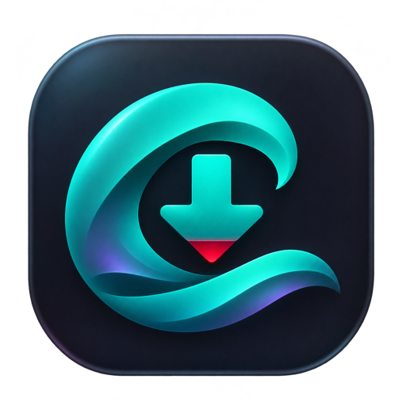
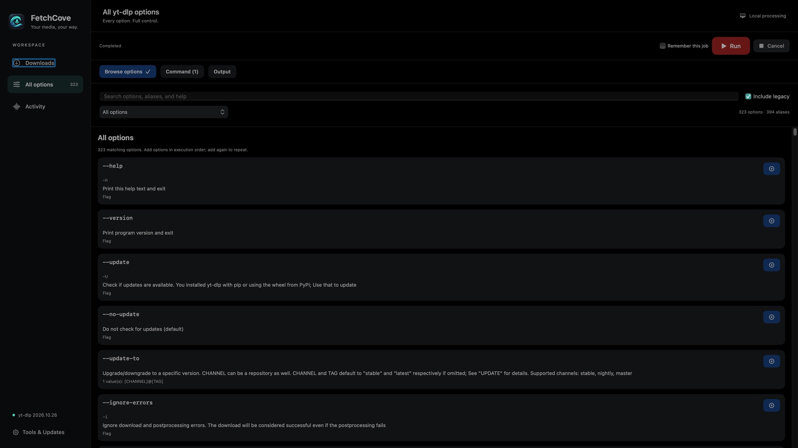

Video, audio, or both
Choose maximum-quality MP4, a resolution cap, original audio, or 320 kbps MP3. Save the full recording, separate chapters, or both from one source download.

FetchCoveA WEBServices Mac utility
Save video and audio in the formats you want. Turn chapters into separate files, keep matching subtitles, and reach the full yt-dlp option catalog from a native Mac interface.
v0.9.911 RC 2 · Apple Silicon · Apple-notarized DMG
Targets macOS 14 or later. macOS 14 testing is in progress.
One link. Your choices.
Release candidate
Open the DMG and drag FetchCove into Applications. Install yt-dlp and FFmpeg separately, then verify their paths in Tools & Updates.
Simple when you want. Detailed when you need.
Choose maximum-quality MP4, a resolution cap, original audio, or 320 kbps MP3. Save the full recording, separate chapters, or both from one source download.
Split a recording into named chapter files. Choose fast source-preserving cuts or precise re-encoded cuts, with the tradeoff visible before you start.
Save matching SRT files with timestamps starting at zero for each chapter. Prefer original captions, identify automatic captions, and see when requested subtitles are unavailable.
Two ways to work
A focused download workspace for everyday media, with a separate place for the engine's detailed options.
Quick download
All options
Search the installed engine's option catalog, including aliases and legacy options. Add repeated arguments, set their order, review the command and follow live output.
Use explicit stable-tool updates and refresh the catalog when the engine changes.

Choose whether to remember each job. Saved execution details stay in macOS Keychain; history never starts a download automatically. Review an interrupted job before retrying it, and forget a record without deleting your media.
Missing subtitles and interrupted work stay visible. Available formats, captions and chapters depend on the source.
Data and privacyIndependent Mac software
Report a problem, suggest an improvement, or support continued development.